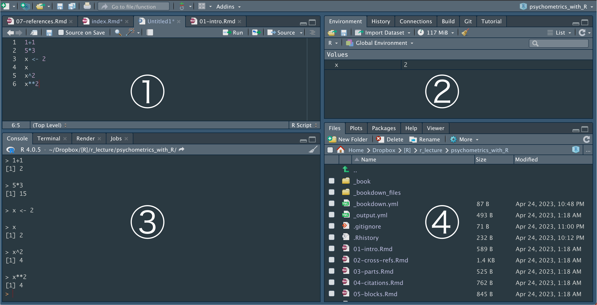
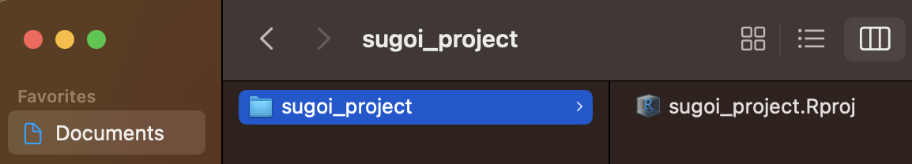

Chapter 2 Go!!
- とりあえずまずは使ってみよう！
2.2 コンソールに直接打ち込む
- 左側の大きな枠を見る
- Consoleのタブが選択されていることを確認
- この画面（＝コンソール）を使い、簡単な足し算を実行しよう
- 最下段の
>のあとに1+1と打ち込みEnter（macはreturn）を押す [1] 2と返ってくる2の部分が1+1の計算結果（[1]は1行目という意味）

2.3 Rスクリプトを使う
- コンソールに書いたコードは、Rstudioを終了すると消える
（実際に終了して再起動してみよう）
- だから、Rスクリプトと呼ばれる保存可能なファイルにコードを書くことが多い
Rスクリプトを作る：
- RStudioの左上の をクリックし、「R Script」を選択
- 左上に新しくできた枠に、空のRスクリプトファイルが表示される
（untitled1と表示されたタブが作成したRスクリプト）
RStudioの４つのペーン：
- 実際には、この４つの枠（＝ペーン）に分かれた画面で作業することが多い

①左上：メインの作業場で、Rスクリプトのコードなどを書くところ
②右上：変数やオブジェクトのリストが表示されたり、バージョン管理を行う
③左下：コードの実行結果が表示されるコンソールや、各種コマンドを実行するターミナルなど
④右下：各種ファイルやパッケージの表示、出力した図の表示など
Rスクリプトに書く：
- 左上のペーンを見て、untitled1のタブが選択されていることを確認
- 1行目に
1+1と入力してctrl+Enter（macはcommand+return）を押す
（ をクリックしても良い） - 左下のペーンのコンソールに結果(
[1] 2)が表示される
保存：
- Rスクリプトはctrl+s（macはcommand+s）で好きな時に保存できる
（ をクリックしても良い） - 初回はファイル名と保存場所も決める （test.Rという名前でデスクトップに保存してみよう）
- 試しに、保存したRスクリプトのタブを閉じてみよう （test.Rのタブの右側の×をクリック）
- 左上の
 をクリックし、保存したRスクリプトのファイルを選択
をクリックし、保存したRスクリプトのファイルを選択
（つまり、デスクトップにあるtest.Rを選択） - Rスクリプトが先ほど保存した状態で開く
2.4 プロジェクト管理
- 研究プロジェクトが進むと、ひとつのRスクリプトだけでは管理しきれなくなる
- プロジェクトを使えば、複数のRスクリプトや関連データなどを一つのフォルダにまとめて効率よく管理できる
プロジェクトの作成：
- 左上の をクリックし、「New Directry」→「New Project」の順に選択
- 次の画面で①プロジェクト名と、その②作成場所を指定して③「Create Project」

- 指定した場所に、指定したプロジェクト名のフォルダができているのを確認しよう
- そのフォルダの中に
プロジェクト名.Rprojというファイルができているのを確認しよう - 以下は、macで
Documentフォルダ内にsugoi_projectというプロジェクトを作った例

- 初めはご利益がわかりにくいが、研究プロジェクトごとにプロジェクトを作るクセをつけよう
- そして、次の心得に従い、プロジェクト上で作業をするようにしよう！
- 毎回
プロジェクト名.RprojをダブルクリックしてRstudioを起動 - 関連するファイルはプロジェクト名のフォルダにまとめて一元管理